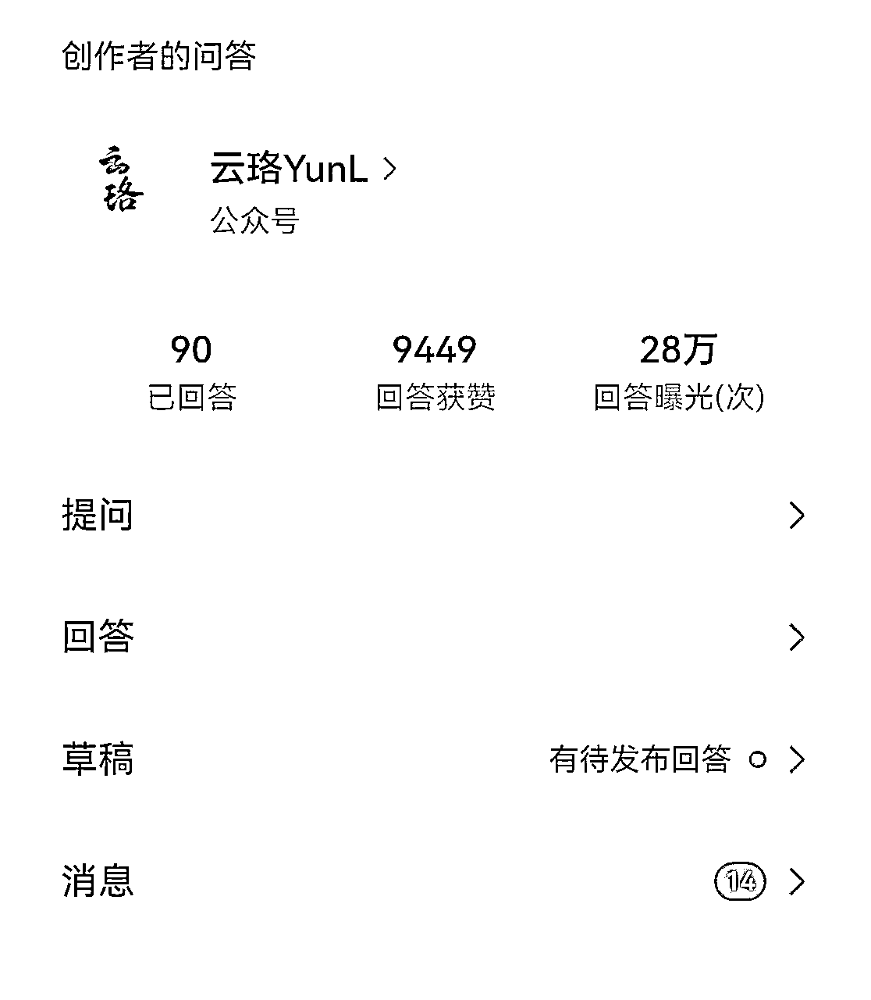
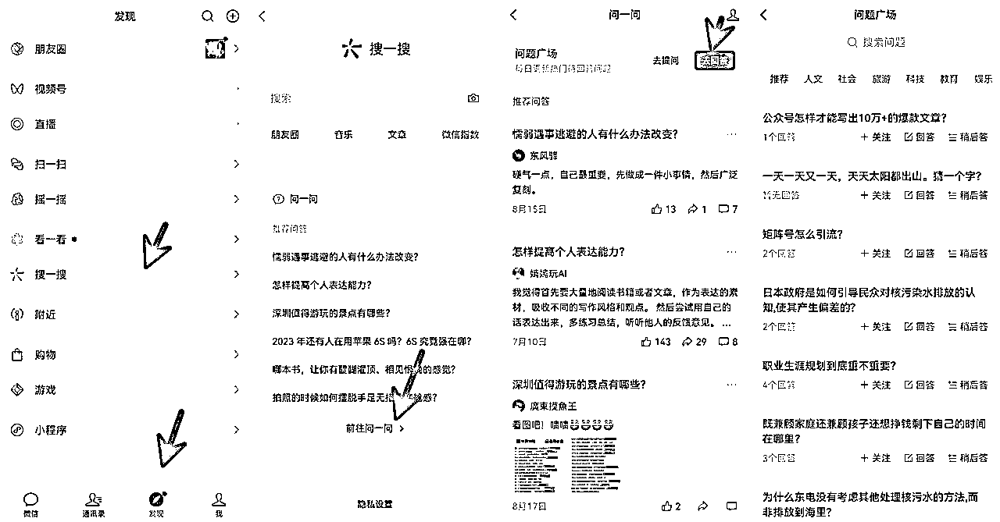
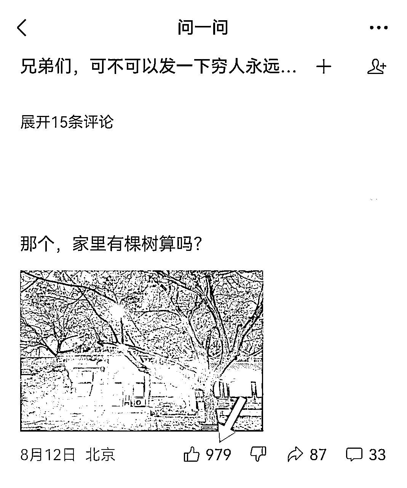
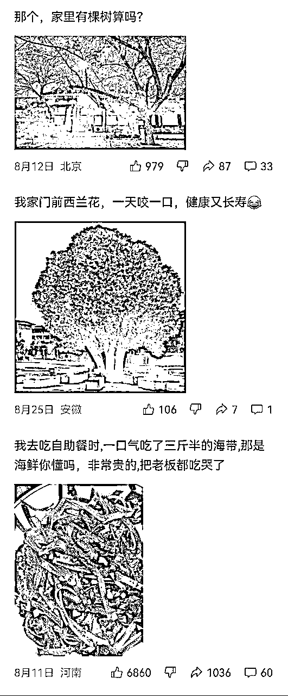

来源：https://yf4niapxuw.feishu.cn/docx/UJ0RdE91pojRqcx5oDBcaizvnkf
你好，我是云珞。
先做一个自我介绍。
我是一个爱学习爱搞钱的女生。每天学习实践3-4小时，坚持日复盘1000天+，互联网项目实战派，我做书单号、短剧曾经经历过一天一千+，做小说推文曾经经历过一个视频赚2万+。
今天我想分享一条问一问28万曝光，为我的公众号带来1600+粉丝的经验。
这次涨粉，不仅仅为我带来了粉丝，还有了其他收获，比如流量主收益96，打赏200，一篇文章阅读量1900+。

一、为什么要做问一问？
先从个人角度来说，我公众号有432篇文章，其中，两三百篇文章是我日更完成的。
我曾经坚持日更过几次，每次时间几十天到一百多天不等。
那时，我看了小说《无限破产危机》，我的昵称便是来自这本小说的主角。
在看这本书之前，我认为我的人生只有一条路，那就是工作-退休，做生意、创业，我从来没有想过。对赚钱的想法很片面，停留在传统印象中。
看了这本书后，我意识到人生有无限可能，我可以配置保险，用每月工资10%购买指数基金，30年后实现财富自由。
于是，我看理财类书籍、学习类书籍。
在理财实践中，我认识到，一个人如果无法克服人性，想在基金股票市场赚钱太难，当我买的股票上涨时，我希望它涨得更高，不想卖。当它下跌时，我希望它涨回我买的价位再脱手。
当我意识到这点后，我就卖光我手里的股票基金，走人了。
我准备做一个学习博主，记录自己的学习成长、看书实践。
可是，光是日更，不公域引流，自己的文章根本没有多少人看，也不会涨粉。
于是，我开始做互联网项目，比如小说推文、短剧、书单号，帮别人卖东西。
归根到底，如果你想做好一个公众号，公域引流必不可少。
微信活跃用户10亿，问一问是微信新推出的产品，平时你搜索内容，问一问的回答会排在前面，权重比较高。
你打开微信，点第三栏发现-搜一搜进去，就看到了问一问。

问一问是今年3月推出的内测，6月份正式推出，平台缺少内容，竞争少，而且字数限制在500字以内，并不需要像知乎一样写长篇大论的干货文章，只要你写的内容有趣，哪怕是两三句话，别人也愿意点关注。
如果你用公众号的身份回答，别人在问一问关注你，直接关注了你的公众号。
如果你用视频号的身份回答，别人在问一问关注你，直接关注了你的视频号。
超级丝滑。

比如，这个回答，一句话，一张图，900多点赞，差不多有90人关注。
他之所以会爆火，一是这个问题关注多，竞争少，1.3万关注，203个回答，二是有反差，别人问的是穷人永远接触不到的场景，长长见识，他直接发了一个大家都能看到的场景，有情绪价值，有共鸣。
二、如何做问一问？有没有技巧？
用你开通公众号或视频号的微信，直接点开发现-搜一搜-前往问一问，找到一个问题就可以回答了。
但若是你随便回答问一问，想要涨粉比较难。
挑选问一问的问题，有小技巧。
1.挑选关注数＞回答数10倍的问题，比如你想写关注读书的问题，你搜索关键词，找到一个问题，关注数1000，回答数100，这个问题就值得回答。
有时候，可能关注数800，回答100，没有完全符合这个要求，也可以回答。
2.在高赞回答下面评论，抢到前五的评论，曝光度越高。如果你担心自己的评论不够有趣，还可以多评论一条，看看点赞数据。虽然现在问一问每天只能回答20条，但评论是没有限制的。
3.看到高赞回答，点进他的头像，看他近期回答有没有高赞，跟着回答该问题。
写问一问有小技巧。
1.字数尽量控制在100字左右。
2.回答有趣幽默。
3.实在是不会回答，看看别人是怎么回答，比如，一个炫耀问题下面的回答，体现自己穷的回答是高赞，你也可以写一个类似的，如图。

一些注意事项:
1.问一问比较宽松，虽然出现其他平台的名称也能通过，但后期可能掉回答，所以不要出现其他平台的名称。
2.不要用ai回答，可以检测出来。
3.不要在同一个时间连续回答，回答完一个问题后，隔一段时间再回答下一个问题。
4.可以做养号动作，比如认真看看问一问，看到有趣的回答，点个赞，偶尔还可以转发，像一个正常用户那样使用问一问。
今天我的分享到这里，谢谢大家阅读，一起成长。